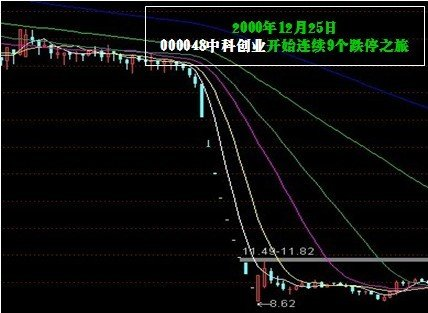
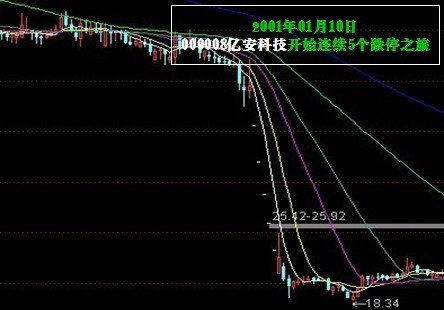
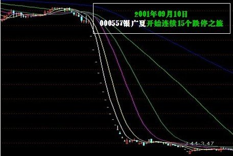
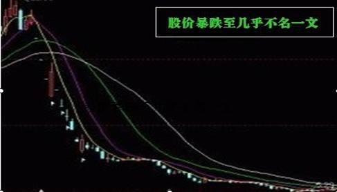
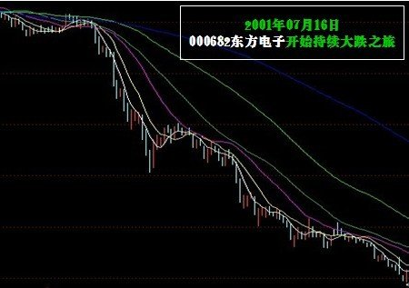
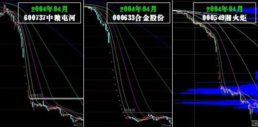
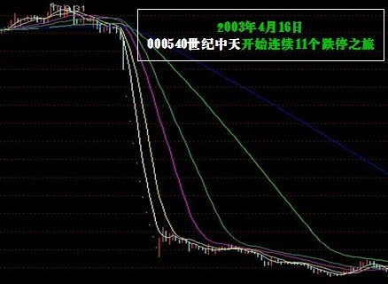

从1990年到2004年“德隆系”的垮台，中国股票市场在成立初期经历了很长一段时间的庄股时代，主要是由于当时供给与需求的不均衡，相关法律制度的不完善导致。
所以翻看过去著名庄股的案例，我们可以看到，庄股的走势具有非常强的趋势性，通常一个上涨趋势能够持续数年之久，但是成交量却极其稀少，表明庄股的筹码已被牢牢控制在了庄家的手中。
利用庄家的信息垄断带来的相对于普通投资者的信息优势实现盈利。当时市场中典型的庄股，都或多或少的制造盈利假象、或者，这些股票估值极高，但由于股价不断上升带来的盈利效应让投资者越发坚信这些股票的投资价值，跟庄的投资策略风靡一时。
时至2001年，随着全流通压力笼罩着整个市场，庄股依靠资金推动的盈利模式已经难以为继，加上相关法律与配套监管措施的出台，做庄的难度正在逐渐加大，这段时间，市场上许多著名的庄股有的以瀑布式下跌的方式（亿安科技、中科创业，银广夏、蓝田股份），有的则是以抵抗式下跌的方式来完成最终的“旁氏骗局”（如德隆系三剑客——湘火炬（现在的潍柴动力）、合金投资和新疆屯河）。随意翻看九十年代前中期上市的股票，悬涯、瀑布这些庄股时代留下的烙印深深地刻画在了每一只曾经的庄股的走势中。
随着庄股的破灭，普通投资者由于信息不对称最终遭受巨额损失，这对当时的金融市场是一个不小的打击。而涨跌停板制度，再次发挥了相反的作用，让整个市场的情绪陷入一片混乱之中。
一些投资者选择利用法律的武器维护自己的权益，这也促使了相关法律的进一步完善，银广夏理赔案件成为了中国金融市场中第一起股民集体索赔案件，足以载入史册。
2009年10月30日，筹备了数年的创业板于深圳证券交易所鸣锣开市，28支股票集体上市的雄伟景象创下了中国股市单日上市新股数量之最。翻看创业板市场过去几年，尤其是近1~2年的表现不难看出诸如价格强趋势性、个股同质化等这些庄股时代的痕迹与特征，创业板是否正处于一个新的庄股时代，有待我们进一步验证与探讨。
1998年底，股市大户朱焕良与股评名人K先生吕梁达成协议坐庄康达尔（中科创业的前身，该公司传统行业亏损严重；为配合二级市场庄家炒作而包装业绩，导致企业财务虚数黑洞巨大；不仅没有土地资源，实际上还卷入了某些经济犯罪大案），并通过掌控上市公司董事会、虚假收购重组、媒体操纵等一系列手段，对中科创业股价实施操纵进行拉抬，该股在1999年、2000年股价每年翻番，在市场上风光无限。后由于两大主角内讧与54亿元资金链崩离，中科创业终于引发不可止歇的雪崩跌停，从2000年12月25日开始，一直平稳运行的深圳中科突然连拉9个跌停板，股价由33.59元跌落至13余元，跌去50个亿市值，参与炒作的中小投资者损失惨重。中科创业崩盘事件被称为中国证券史上最为血腥和惊心动魄的庄股泡沫破裂事件。

1998年10月至2001年2月间，亿安集团动用14.856亿元资金，通过注册多家投资顾问公司，进行不转移所有权的自买自卖炒作亿安科技股票（亿安科技现名ST宝利来），实现高度控盘操纵股价，“亿安科技”股票从1999年10月25日起，在短短的70个交易日中，股价由26元左右不停歇地上涨，并突破百元大关，成为自沪深股票实施拆细后首只市价超过百元的股票，引起了市场的极大震动。
然而，“亿安科技”股票出现的种种异常行为，早已被中国证监会注意，并与2001年1月10日宣布宣布查处涉嫌操纵“亿安科技”股价案，对持有亿安科技股票的主要帐户进行重点监控。“亿安科技”自2001年1月10日起连续5个跌停尚无止跌，被广大股民称为中国股市的神话终究破灭。“亿安科技”股票大幅下挫造成崩盘，使得广大小股东损失惨重、血本无归。

1999年至2001年间，中国股市上演一幕“绩优股”造牛奇迹。根据银广夏（现名为*ST广夏）1999年年报，银广夏的每股盈利当年达到前所未有的0.51元；其股价则先知先觉，从1999年12月30日的13.97元启动，一路狂飙，至2000年4月19日涨至35.83元。次日实施了优厚的分红方案10转赠10后，即进入填权行情，于2000年12月29日完全填权并创下37.99元新高，折合为除权前的价格75.98元，较一年前启动时的价位上涨440％，较之于1999年“5•19行情”发动前，则上涨了8倍多；2000年全年涨幅高居深沪两市第二；2000年年报披露的业绩再创“奇迹”，在股本扩大一倍基础上，每股收益攀升至0.827元。“灿烂的未来”不符合常识，终被看穿。“真、假”两重天2001年8月银广夏造假事件被媒体曝光，结束了这只大牛股的绩优神话。一个月后复牌，连续的15个跌停，中小投资者损失极为惨重，从而引发了千名小股东集体诉讼事件。

1996年5月，蓝田股份以“中国农业第一股”身份在在上交所上市。蓝田股份曾经创造了中国股市常盛不衰的绩优神话。这家以养殖、旅游和饮料为主的上市公司，一亮相就颠覆了行业规律和市场法则，1996年发行上市以后，在财务数字上一直保持著神奇的增长速度：总资产规模从上市前的2．66亿元发展到2000年末的28．38亿元，增长了9倍，历年年报的业绩都在每股0．60元以上，最高达到1．15元。即使遭遇了1998年特大洪灾以后，每股收益也达到了不可思议的0．81元，5年间股本扩张了360％，创造了中国农业企业罕见的“蓝田神话”。 2001年11月，中央财经大学财经研究所研究员刘姝威在《金融内参》发表600字短文《应立即停止对蓝田股份发放贷款》，此后蓝田资金链开始断裂。2002年1月，涉嫌提供虚假财务资讯，董事长保田等10名中高层管理人员被证监会拘传接受调查；2002年3月，公司实行特别处理，股票简称变更为“ST生态” ；2002年5月，因连续3年亏损，暂停上市至今。以蓝田股份为核心的“大蓝田”非但套牢银行贷款十几亿元，而且二级市场上流通市值“蒸发”超过25亿元，商业银行和中小投资者成为蓝田案的最大受害者，二级市场上股价暴跌至几乎不名一文，不少股民因此血本无归。

东方电子曾是沪深股市中出名的“绩优股”，是国内高科技成长股神话的象征。自1997年1月上市起，尽管公司股本年年高速扩张(1997年5月实施1996年度分配10股送4股公积金转增6股，1998年度10送8股，1999年度中期10送6股公积金转增4股，1999年度末期10送2.5股公积金转增3.5股)，但公司的业绩并没有因股本高速扩张而稀释，相反诸年利润水准、每股收益、净资产收益率等指标，一直保持在较高水准。正因如此，该股被普遍公认为高成长股的典范而受市场热炒，股价从1997年上市之初的17.79元，一路攀升至2000年2月的最高价复权达448.93元，3年累计涨幅高达24.23倍。尤其是1999年底该股23246万股内部职工股上市后不跌反涨，一个半月内从14.5元一路飙升至45元。中国证监会于2001年7月开始展开对东方电子的调查，东方电子股价“跳水”发生于2001年7月中旬，7月16日起由前一个交易日收盘17.44元开始异常下跌，到8月6日最低跌至10.28元。小幅反弹至12元多后，很快又开始一轮下跌，到11月中旬跌破5元。检察机关指出，因东方电子提供虚假财务报告，导致其股票价格连续下跌，市值大幅缩水，共计给股东造成损失25.7亿元。事实上，投资者的损失远不止这个数字。

唐万新领导的“德隆系”在资本市场本称为“中国第一焊庄”，而新疆德隆控制的三家上市公司“新疆屯河”、“合金股份”、“湘火炬”（合称老三股，新疆屯河现名为中粮屯河，合金股份现名为ST合计，湘火炬已退市），在2000年至2003年间短短三年多的时间里，由于焊庄的入驻股价分别上涨1,100%、1,500%和1,100%。“德隆系”股票能有如此巨大的涨幅，股市第一焊庄功不可没，频繁投资、转让及高送令股价飙升，将价格操纵发挥到极致，先后共使用了4万个股东帐户，有关联关系的上市公司19家。然而“啤酒花事件”成为银行严密防范企业贷款的导火线，德隆系难以再从银行贷款并被迫向银行归还巨额贷款，德隆的资金链终于断裂。从2004年4月14日，德隆系“三驾马车”（新疆屯河、合金投资、湘火炬）连续高台跳水，一个月时间市值蒸发156亿，广大中小投资也损失惨重。

资本大鳄刘志远在世纪中天（现名中天城投）期间，为配合二级市场，以多元化为名，四处投资，这些项目大都石沉大海。但多年年报均显示，公司控股和参股的几家公司几乎全线亏损。刘志远的世纪兴业、中投创业等关联公司在北京、深圳等向银行大量融资，从而实现二级市场股价操纵。从1994年底，世纪中天从10元以下启动，中间经过数次大比例除权后，至2003年3月最高见到24元，该价格复权后相当于80元左右。据分析，世纪中天由于运作时间较长，主力持仓成本甚至降到3元左右。面对如此巨大的市场风险，很多券商得知“中联控”操作的是“世纪中天”都不愿与之合作，而厦门证券却不加分析地引入“中联控”把客户的资金都变成了世纪中天的股票，“中联控”后来也被多家媒体证实是世纪中天庄家所依赖的托盘机构。2003年3月，世纪中天经历一年的盘局之后突然摸高至24元，有业内人士认为这是庄家即将拉高出货的前兆。2003年4月16日，悲剧终于发生了，世纪中天开始了连续11个跌停后并步入了漫漫漫漫熊途，广大投资者损失惨重。

随着庄股时代的破灭，整个市场变得青黄不接，六神无主，参与者的主体大多数为普通散户。也就渐渐迈入了散户时代。根据投资者模型的分析可以看出，这个时代的特点，就是个股之间，个股与指数之间走势的，股价的趋势性虽然没有庄股时代那么强，但仍然呈现出较为显著的正相关性。因为投资者的投资决策大多只根据价格来判断，因而股价走势的同质化、趋势化也就不难理解了。
近年来随着基金、信托业的蓬勃发展以及合格境外投资者审批加速，市场迎来了大量机构投资者，并逐步实现了去散户化，向价值投资时代过渡。
价值投资时代的一个显著的特征便是个股分化的加剧，股票的价格对市场指数的依赖程度降低，更多反映了自身的投资价值。
这一现象自2008年后便有所体现，并在2011年开始蔓延。2013年的创业板雄起。虽然笔者对这些个股分化是否真的反映了价值投资的理念，是否有诸如资金面等因素的影响不得而知，但这一现象的产生是市场进步的一个标志，值得肯定。